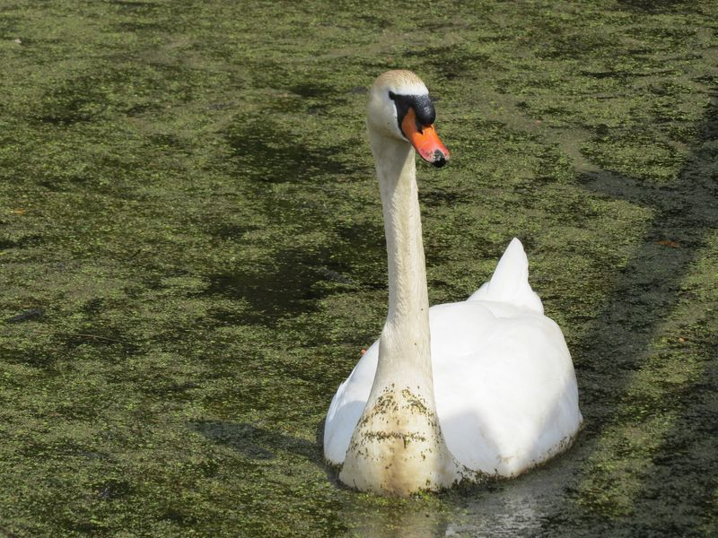

Höckerschwan
Cygnus olor
Unser größter flugfähiger Vogel besucht von Zeit zu Zeit sowohl die Riedseen wie auch den Lehrpfad. Er hat mehrfach im Ried gebrütet. Kennzeichen sind neben der Größe ein schwarz-rot gefärbter Schnabel. Sein nordischer Vetter, der am Bodensee überwinternde Singschwan, hat einen schwarz-gelben Schnabel.